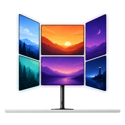
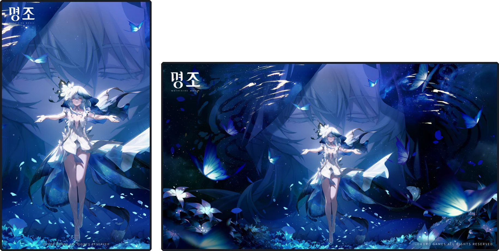
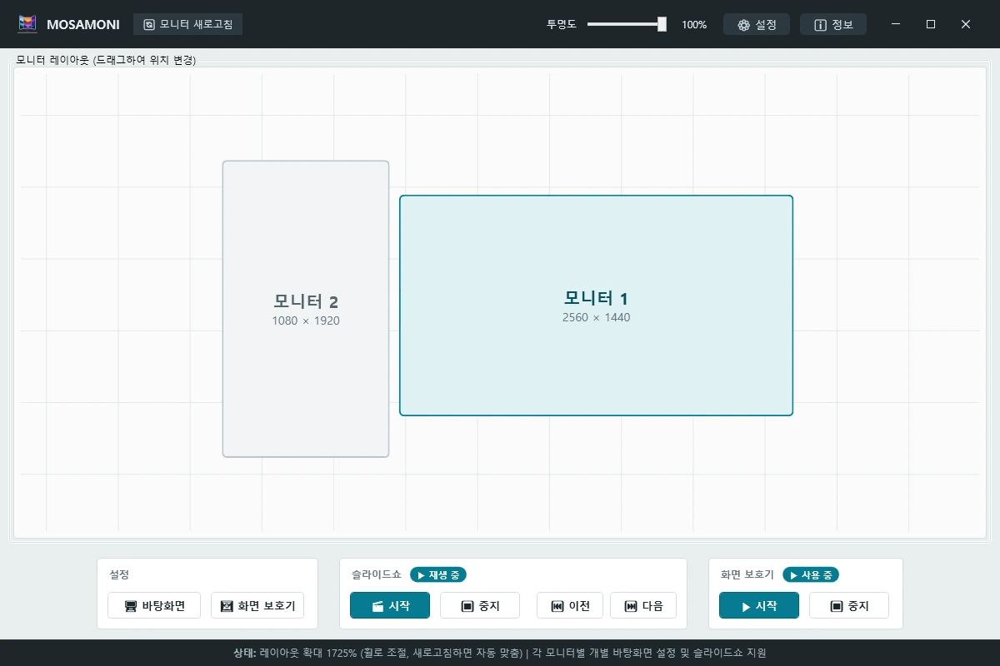
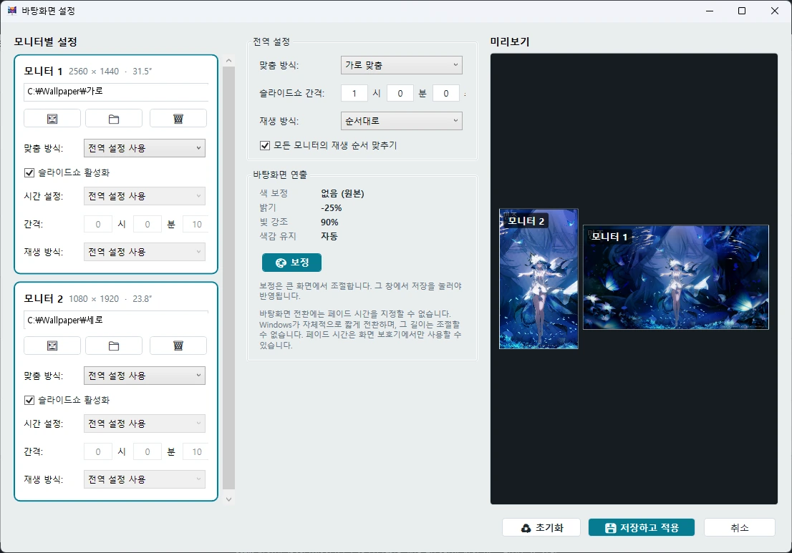
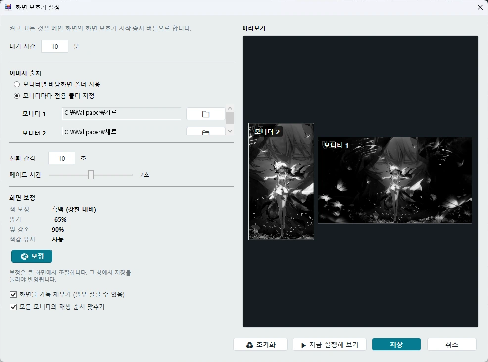
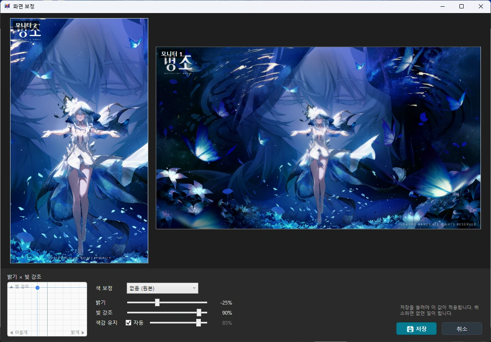
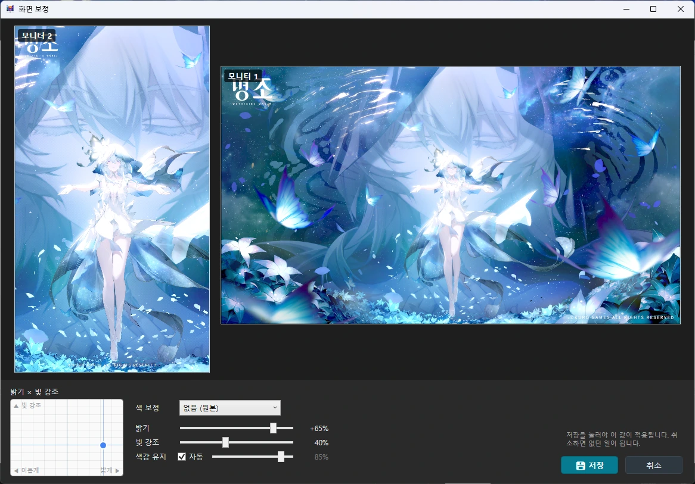

모니터마다 다른 바탕화면을 걸고,
모니터마다 따로 도는 슬라이드쇼를 돌리는 Windows 앱
v1.0.0 · Windows 10 / 11 (x64) · MIT
설치할 때만 관리자 권한이 필요합니다. 앱 자체는 승격 없이 돕니다.
받고 설치할 때 경고가 두 번 뜹니다
둘 다 정상입니다. 파일이 잘못된 것이 아닙니다.
Google 드라이브에서 이 파일의 바이러스 여부를 검사할 수 없습니다. 그래도 다운로드하시겠습니까?
구글 드라이브는 25MB가 넘는 파일을 검사하지 않습니다. 이 설치 파일은 75MB라 크기 때문에 검사에서 빠지는 것이지, 파일에 문제가 있다는 뜻이 아닙니다. 다운로드를 누르시면 됩니다.
Microsoft Defender SmartScreen에서 인식할 수 없는 앱의 시작을 차단했습니다.
추가 정보 → 실행을 누르면 진행됩니다. 코드 서명 인증서가 없어서 뜨는 것으로, 서명이 없는 모든 설치 파일에 똑같이 나타납니다. 받은 곳이 어디든 마찬가지입니다.

여기 쓰인 배경화면은 명조 공식 라운지에서 “배경화면”으로 검색하면 받을 수 있습니다. 가로·세로 판본이 함께 있습니다. 명조(Wuthering Waves) © Kuro Games. 이 프로그램과는 무관한 별개 저작물입니다.

모니터를 끌어서 옮기면 됩니다. 크기는 모니터에서 읽어 온 실물 치수라 27인치 옆의 24인치가 화면에서도 그만큼 작게 보입니다. 아래에서 슬라이드쇼와 화면 보호기를 켜고 끕니다.

모니터 카드마다 폴더를 하나씩 지정합니다. 간격과 재생 방식도 따로 줄 수 있고, 전역 설정을 그대로 쓰게 둘 수도 있습니다. 오른쪽 미리보기로 어느 모니터에 무엇이 걸릴지 미리 봅니다.

바탕화면과 같은 폴더를 써도 되고, 모니터마다 전용 폴더를 따로 줘도 됩니다. 대기 시간과 페이드 시간을 정하고 저장하면 Windows 화면 보호기 목록에 등록됩니다.
왼쪽 아래 2D 패널에서 점 하나를 옮기면 밝기와 빛 강조가 함께 정해집니다. 같은 그림도 이만큼 달라집니다. 저장을 눌러야 반영되므로 마음껏 만져 봐도 됩니다.


Wallpaper
Windows 가 정식으로 제공하는 방법으로 모니터별로 따로 겁니다. 레지스트리를 건드리지 않습니다.
Slideshow
Screen saver
모든 모니터에 동시에 뜨고 부드럽게 넘어갑니다. Windows 설정의 화면 보호기 목록에 정식으로 등록되고 미리보기도 나옵니다. 모니터마다 다른 폴더를 쓸 수 있습니다.
Layout
Look
바탕화면과 화면 보호기에 각각 따로 겁니다. 보정 창에서 크게 보며 조절하고, 저장을 눌러야 반영됩니다.
Etc
Windows 가 모든 모니터에 한꺼번에 적용하는 전역 설정이라 막혀 있습니다. 앱이 못 하는 것이 아니라 Windows 쪽에서 길이 없습니다. 맞춤 방식은 전역 항목으로 쓰세요.
프로그램을 지워도 남습니다. 제거할 때 함께 지울지 물어봅니다.
| 운영체제 | Windows 10 / 11 (x64) |
|---|---|
| 런타임 | 필요 없음 — .NET 8을 포함해 배포합니다 |
| 권한 | 설치할 때만 관리자. 실행은 일반 권한 |
| 이미지 형식 | JPG · JPEG · PNG · BMP · GIF · TIFF |
MOSAMONI는 무료이고 앞으로도 무료입니다. 쓰시다가 마음이 동하시면 여기로 보내실 수 있습니다. 보내지 않으셔도 기능은 하나도 잠기지 않습니다.
후원하기